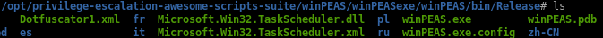
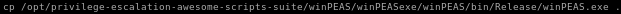
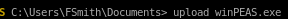

winPEAS
here is winPEAS binary location:
copy it to our working directory with cp

we can upload WinPEAS easily to our victim fsmith through our powershell session foothold with download
upload winPEAS.exe

winPEAS finds Autologon creds
svc_loadmanager
Moneymakestheworldgoround!

svc_loanmanager is the default username here but actually its svc_loanmgr
running net user